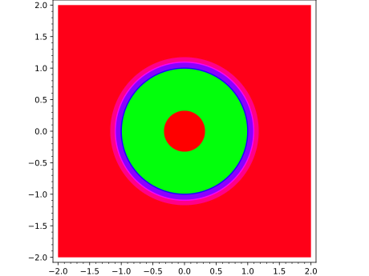
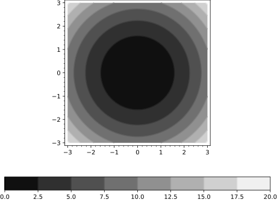
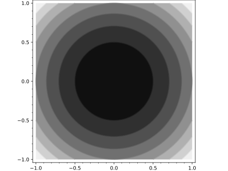

Primitive class for the contour plot graphics type.
See contour_plot? for help actually doing contour plots.
INPUT:
xy_data_array - list of lists giving evaluated values of the function
on the grid
xrange - tuple of 2 floats indicating range for horizontal direction
yrange - tuple of 2 floats indicating range for vertical direction
options - dict of valid plot options to pass to constructor
EXAMPLES:
Note this should normally be used indirectly via contour_plot:
sage: fromsage.plot.contour_plotimportContourPlotsage: C=ContourPlot([[1,3],[2,4]],(1,2),(2,3),options={})sage: CContourPlot defined by a 2 x 2 data gridsage: C.xrange(1, 2)
contour_plot takes a function of two variables, \(f(x,y)\)
and plots contour lines of the function over the specified
xrange and yrange as demonstrated below.
contour_plot(f,(xmin,xmax),(ymin,ymax),...)
INPUT:
f – a function of two variables
(xmin,xmax) – 2-tuple, the range of x values OR 3-tuple
(x,xmin,xmax)
(ymin,ymax) – 2-tuple, the range of y values OR 3-tuple
(y,ymin,ymax)
The following inputs must all be passed in as named parameters:
plot_points – integer (default: 100); number of points to plot
in each direction of the grid. For old computers, 25 is fine, but
should not be used to verify specific intersection points.
fill – bool (default: True), whether to color in the area
between contour lines
cmap – a colormap (default: 'gray'), the name of
a predefined colormap, a list of colors or an instance of a matplotlib
Colormap. Type: importmatplotlib.cm;matplotlib.cm.datad.keys()
for available colormap names.
contours – integer or list of numbers (default: None):
If a list of numbers is given, then this specifies the contour levels
to use. If an integer is given, then this many contour lines are
used, but the exact levels are determined automatically. If None
is passed (or the option is not given), then the number of contour
lines is determined automatically, and is usually about 5.
linewidths – integer or list of integer (default: None), if
a single integer all levels will be of the width given,
otherwise the levels will be plotted with the width in the order
given. If the list is shorter than the number of contours, then
the widths will be repeated cyclically.
linestyles – string or list of strings (default: None), the
style of the lines to be plotted, one of: "solid", "dashed",
"dashdot", "dotted", respectively "-", "--",
"-.", ":". If the list is shorter than the number of
contours, then the styles will be repeated cyclically.
labels – boolean (default: False) Show level labels or not.
The following options are to adjust the style and placement of
labels, they have no effect if no labels are shown.
label_fontsize – integer (default: 9), the font size of
the labels.
label_colors – string or sequence of colors (default:
None) If a string, gives the name of a single color with which
to draw all labels. If a sequence, gives the colors of the
labels. A color is a string giving the name of one or a
3-tuple of floats.
label_inline – boolean (default: False if fill is True,
otherwise True), controls whether the underlying contour is
removed or not.
label_inline_spacing – integer (default: 3), When inline,
this is the amount of contour that is removed from each side,
in pixels.
label_fmt – a format string (default: “%1.2f”), this is
used to get the label text from the level. This can also be a
dictionary with the contour levels as keys and corresponding
text string labels as values. It can also be any callable which
returns a string when called with a numeric contour level.
colorbar – boolean (default: False) Show a colorbar or not.
The following options are to adjust the style and placement of
colorbars. They have no effect if a colorbar is not shown.
colorbar_orientation – string (default: ‘vertical’),
controls placement of the colorbar, can be either ‘vertical’
or ‘horizontal’
colorbar_format – a format string, this is used to format
the colorbar labels.
colorbar_spacing – string (default: ‘proportional’). If
‘proportional’, make the contour divisions proportional to
values. If ‘uniform’, space the colorbar divisions uniformly,
without regard for numeric values.
legend_label – the label for this item in the legend
region - (default: None) If region is given, it must be a function
of two variables. Only segments of the surface where region(x,y)
returns a number >0 will be included in the plot.
EXAMPLES:
Here we plot a simple function of two variables. Note that
since the input function is an expression, we need to explicitly
declare the variables in 3-tuples for the range:
sage: x,y=var('x,y')sage: contour_plot(cos(x^2+y^2),(x,-4,4),(y,-4,4))Graphics object consisting of 1 graphics primitive
Here we change the ranges and add some options:
sage: x,y=var('x,y')sage: contour_plot((x^2)*cos(x*y),(x,-10,5),(y,-5,5),fill=False,plot_points=150)Graphics object consisting of 1 graphics primitive
An even more complicated plot:
sage: x,y=var('x,y')sage: contour_plot(sin(x^2+y^2)*cos(x)*sin(y),(x,-4,4),(y,-4,4),plot_points=150)Graphics object consisting of 1 graphics primitive
Some elliptic curves, but with symbolic endpoints. In the first
example, the plot is rotated 90 degrees because we switch the
variables \(x\), \(y\):
sage: x,y=var('x,y')sage: contour_plot(y^2+1-x^3-x,(y,-pi,pi),(x,-pi,pi))Graphics object consisting of 1 graphics primitive
sage: contour_plot(y^2+1-x^3-x,(x,-pi,pi),(y,-pi,pi))Graphics object consisting of 1 graphics primitive
We can play with the contour levels:
sage: x,y=var('x,y')sage: f(x,y)=x^2+y^2sage: contour_plot(f,(-2,2),(-2,2))Graphics object consisting of 1 graphics primitive
sage: contour_plot(f,(-2,2),(-2,2),contours=2,cmap=[(1,0,0),(0,1,0),(0,0,1)])Graphics object consisting of 1 graphics primitive
sage: contour_plot(f,(-2,2),(-2,2),....: contours=(0.1,1.0,1.2,1.4),cmap='hsv')Graphics object consisting of 1 graphics primitive

sage: contour_plot(f,(-2,2),(-2,2),contours=(1.0,),fill=False)Graphics object consisting of 1 graphics primitive
sage: contour_plot(x-y^2,(x,-5,5),(y,-3,3),contours=[-4,0,1])Graphics object consisting of 1 graphics primitive
We can change the style of the lines:
sage: contour_plot(f,(-2,2),(-2,2),fill=False,linewidths=10)Graphics object consisting of 1 graphics primitive
sage: contour_plot(f,(-2,2),(-2,2),fill=False,linestyles='dashdot')Graphics object consisting of 1 graphics primitive
We can change the color of the labels if so desired:
sage: contour_plot(f,(-2,2),(-2,2),labels=True,label_colors='red')Graphics object consisting of 1 graphics primitive
We can add a colorbar as well:
sage: f(x,y)=x^2-y^2sage: contour_plot(f,(x,-3,3),(y,-3,3),colorbar=True)Graphics object consisting of 1 graphics primitive
sage: contour_plot(f,(x,-3,3),(y,-3,3),colorbar=True,colorbar_orientation='horizontal')Graphics object consisting of 1 graphics primitive

sage: contour_plot(f,(x,-3,3),(y,-3,3),contours=[-2,-1,4],colorbar=True)Graphics object consisting of 1 graphics primitive
sage: contour_plot(f,(x,-3,3),(y,-3,3),contours=[-2,-1,4],....: colorbar=True,colorbar_spacing='uniform')Graphics object consisting of 1 graphics primitive
sage: contour_plot(f,(x,-3,3),(y,-3,3),contours=[0,2,3,6],....: colorbar=True,colorbar_format='%.3f')Graphics object consisting of 1 graphics primitive
sage: contour_plot(f,(x,-3,3),(y,-3,3),labels=True,....: label_colors='red',contours=[0,2,3,6],....: colorbar=True)Graphics object consisting of 1 graphics primitive
sage: contour_plot(f,(x,-3,3),(y,-3,3),cmap='winter',....: contours=20,fill=False,colorbar=True)Graphics object consisting of 1 graphics primitive
This should plot concentric circles centered at the origin:
sage: x,y=var('x,y')sage: contour_plot(x^2+y^2-2,(x,-1,1),(y,-1,1))Graphics object consisting of 1 graphics primitive

Extra options will get passed on to show(), as long as they are valid:
sage: f(x,y)=cos(x)+sin(y)sage: contour_plot(f,(0,pi),(0,pi),axes=True)Graphics object consisting of 1 graphics primitive
sage: contour_plot(f,(0,pi),(0,pi)).show(axes=True)# These are equivalent
One can also plot over a reduced region:
sage: contour_plot(x**2-y**2,(x,-2,2),(y,-2,2),region=x-y,plot_points=300)Graphics object consisting of 1 graphics primitive
Note that with fill=False and grayscale contours, there is the
possibility of confusion between the contours and the axes, so use
fill=False together with axes=True with caution:
sage: contour_plot(f,(-pi,pi),(-pi,pi),fill=False,axes=True)Graphics object consisting of 1 graphics primitive
implicit_plot takes a function of two variables, \(f(x, y)\)
and plots the curve \(f(x,y) = 0\) over the specified
xrange and yrange as demonstrated below.
implicit_plot(f,(xmin,xmax),(ymin,ymax),...)
implicit_plot(f,(x,xmin,xmax),(y,ymin,ymax),...)
INPUT:
f – a function of two variables or equation in two variables
(xmin,xmax) – 2-tuple, the range of x
values or (x,xmin,xmax)
(ymin,ymax) – 2-tuple, the range of y
values or (y,ymin,ymax)
The following inputs must all be passed in as named parameters:
plot_points – integer (default: 150); number of points to plot
in each direction of the grid
fill – boolean (default: False); if True, fill the region
\(f(x, y) < 0\).
fillcolor – string (default: 'blue'), the color of the region
where \(f(x,y) < 0\) if fill=True. Colors are defined in
sage.plot.colors; try colors? to see them all.
linewidth – integer (default: None), if a single integer all levels
will be of the width given, otherwise the levels will be plotted with the
widths in the order given.
linestyle – string (default: None), the style of the line to be
plotted, one of: "solid", "dashed", "dashdot" or
"dotted", respectively "-", "--", "-.", or ":".
color – string (default: 'blue'), the color of the plot. Colors
are defined in sage.plot.colors; try colors? to see them all.
If fill=True, then this sets only the color of the border of the
plot. See fillcolor for setting the color of the fill region.
legend_label – the label for this item in the legend
base – (default: 10) the base of the logarithm if
a logarithmic scale is set. This must be greater than 1. The base
can be also given as a list or tuple (basex,basey).
basex sets the base of the logarithm along the horizontal
axis and basey sets the base along the vertical axis.
scale – (default: "linear") string. The scale of the axes.
Possible values are "linear", "loglog", "semilogx",
"semilogy".
The scale can be also be given as single argument that is a list
or tuple (scale,base) or (scale,basex,basey).
The "loglog" scale sets both the horizontal and vertical axes to
logarithmic scale. The "semilogx" scale sets the horizontal axis
to logarithmic scale. The "semilogy" scale sets the vertical axis
to logarithmic scale. The "linear" scale is the default value
when Graphics is initialized.
EXAMPLES:
A simple circle with a radius of 2. Note that
since the input function is an expression, we need to explicitly
declare the variables in 3-tuples for the range:
sage: implicit_plot(mandel(1),(-3,3),(-3,3))Graphics object consisting of 1 graphics primitive
A third-level approximation starts to get interesting:
sage: implicit_plot(mandel(3),(-2,1),(-1.5,1.5))Graphics object consisting of 1 graphics primitive
The seventh-level approximation is a degree 64 polynomial, and
implicit_plot does a pretty good job on this part of the curve.
(plot_points=200 looks even better, but it takes over a second.)
sage: implicit_plot(mandel(7),(-0.3,0.05),(-1.15,-0.9),plot_points=50)Graphics object consisting of 1 graphics primitive
When making a filled implicit plot using a python function rather than a
symbolic expression the user should increase the number of plot points to
avoid artifacts:
sage: implicit_plot(lambdax,y:x^2+y^2-2,(x,-3,3),(y,-3,3),....: fill=True,plot_points=500)# long timeGraphics object consisting of 2 graphics primitives
An example of an implicit plot on ‘loglog’ scale:
sage: implicit_plot(x^2+y^2==200,(x,1,200),(y,1,200),scale='loglog')Graphics object consisting of 1 graphics primitive
region_plot takes a boolean function of two variables, \(f(x, y)\)
and plots the region where f is True over the specified
xrange and yrange as demonstrated below.
region_plot(f,(xmin,xmax),(ymin,ymax),...)
INPUT:
f – a boolean function or a list of boolean functions of
two variables
(xmin,xmax) – 2-tuple, the range of x values OR 3-tuple
(x,xmin,xmax)
(ymin,ymax) – 2-tuple, the range of y values OR 3-tuple
(y,ymin,ymax)
plot_points – integer (default: 100); number of points to plot
in each direction of the grid
incol – a color (default: 'blue'), the color inside the region
outcol – a color (default: None), the color of the outside
of the region
If any of these options are specified, the border will be shown as
indicated, otherwise it is only implicit (with color incol) as the
border of the inside of the region.
bordercol – a color (default: None), the color of the border
('black' if borderwidth or borderstyle is specified but
not bordercol)
borderstyle – string (default: 'solid'), one of 'solid',
'dashed', 'dotted', 'dashdot', respectively '-',
'--', ':', '-.'.
borderwidth – integer (default: None), the width of the
border in pixels
alpha – (default: 1) how transparent the fill is; a number
between 0 and 1
legend_label – the label for this item in the legend
base - (default: 10) the base of the logarithm if
a logarithmic scale is set. This must be greater than 1. The base
can be also given as a list or tuple (basex,basey).
basex sets the base of the logarithm along the horizontal
axis and basey sets the base along the vertical axis.
scale – (default: "linear") string. The scale of the axes.
Possible values are "linear", "loglog", "semilogx",
"semilogy".
The scale can be also be given as single argument that is a list
or tuple (scale,base) or (scale,basex,basey).
The "loglog" scale sets both the horizontal and vertical axes to
logarithmic scale. The "semilogx" scale sets the horizontal axis
to logarithmic scale. The "semilogy" scale sets the vertical axis
to logarithmic scale. The "linear" scale is the default value
when Graphics is initialized.
EXAMPLES:
Here we plot a simple function of two variables:
sage: x,y=var('x,y')sage: region_plot(cos(x^2+y^2)<=0,(x,-3,3),(y,-3,3))Graphics object consisting of 1 graphics primitive
Here we play with the colors:
sage: region_plot(x^2+y^3<2,(x,-2,2),(y,-2,2),incol='lightblue',bordercol='gray')Graphics object consisting of 2 graphics primitives
An even more complicated plot, with dashed borders:
sage: region_plot(sin(x)*sin(y)>=1/4,(x,-10,10),(y,-10,10),....: incol='yellow',bordercol='black',....: borderstyle='dashed',plot_points=250)Graphics object consisting of 2 graphics primitives
A disk centered at the origin:
sage: region_plot(x^2+y^2<1,(x,-1,1),(y,-1,1))Graphics object consisting of 1 graphics primitive
A plot with more than one condition (all conditions must be true for the
statement to be true):
sage: region_plot([x^2+y^2<1,x<y],(x,-2,2),(y,-2,2))Graphics object consisting of 1 graphics primitive
Since it does not look very good, let us increase plot_points:
sage: region_plot([x^2+y^2<1,x<y],(x,-2,2),(y,-2,2),plot_points=400)Graphics object consisting of 1 graphics primitive
To get plots where only one condition needs to be true, use a function.
Using lambda functions, we definitely need the extra plot_points:
sage: region_plot(lambdax,y:x^2+y^2<1orx<y,(x,-2,2),(y,-2,2),plot_points=400)Graphics object consisting of 1 graphics primitive
The first quadrant of the unit circle:
sage: region_plot([y>0,x>0,x^2+y^2<1],(x,-1.1,1.1),(y,-1.1,1.1),plot_points=400)Graphics object consisting of 1 graphics primitive
Here is another plot, with a huge border:
sage: region_plot(x*(x-1)*(x+1)+y^2<0,(x,-3,2),(y,-3,3),....: incol='lightblue',bordercol='gray',borderwidth=10,....: plot_points=50)Graphics object consisting of 2 graphics primitives
If we want to keep only the region where x is positive:
sage: region_plot([x*(x-1)*(x+1)+y^2<0,x>-1],(x,-3,2),(y,-3,3),....: incol='lightblue',plot_points=50)Graphics object consisting of 1 graphics primitive
Here we have a cut circle:
sage: region_plot([x^2+y^2<4,x>-1],(x,-2,2),(y,-2,2),....: incol='lightblue',bordercol='gray',plot_points=200)Graphics object consisting of 2 graphics primitives
The first variable range corresponds to the horizontal axis and
the second variable range corresponds to the vertical axis:
sage: s,t=var('s, t')sage: region_plot(s>0,(t,-2,2),(s,-2,2))Graphics object consisting of 1 graphics primitive
sage: region_plot(s>0,(s,-2,2),(t,-2,2))Graphics object consisting of 1 graphics primitive
An example of a region plot in ‘loglog’ scale:
sage: region_plot(x^2+y^2<100,(x,1,10),(y,1,10),scale='loglog')Graphics object consisting of 1 graphics primitive